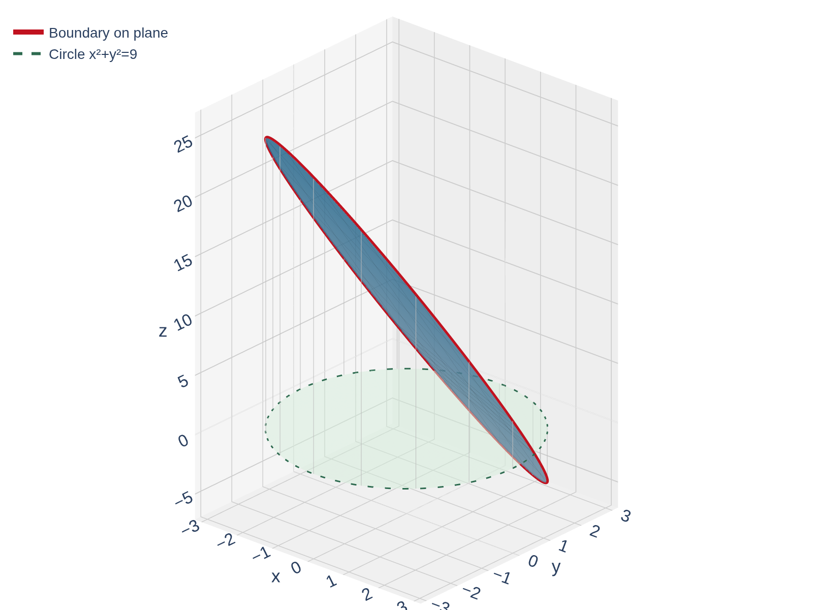
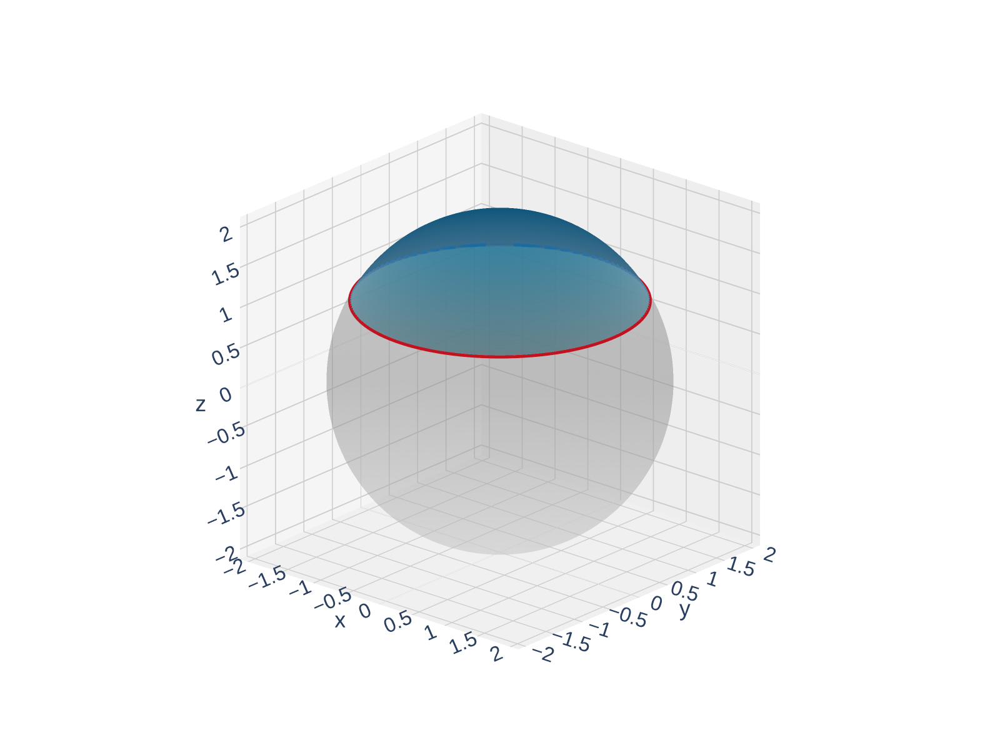

From Arc Length to Surface Area
In Calc I, you learned that the arc length of \(y = f(x)\) from \(a\) to \(b\) is:
\[L = \int_a^b \sqrt{1 + \left[f'(x)\right]^2}\, dx\]
Where does this \(\sqrt{1 + (f')^2}\) come from?
Zoom in on one small piece. The curve segment has length \(\approx\) the hypotenuse, not the horizontal distance \(\Delta x\). By the Pythagorean theorem:
\[\text{length} \approx \sqrt{(\Delta x)^2 + (f' \Delta x)^2} = \sqrt{1 + (f')^2}\; \Delta x\]
The factor \(\sqrt{1 + (f')^2}\) is a correction factor that accounts for the tilt of the curve. If \(f' = 0\) (flat), the correction is 1. If the curve is steep, the correction is larger.
Surface area is the same idea — but in two dimensions. We need a correction factor that accounts for the tilt of a surface, not just a curve.
Arc length: \(\int \sqrt{1 + (f')^2} dx\). Surface area: \(\iint \sqrt{?} dA\). Our job is to find what goes under the square root.
Why Surface Area Needs a Correction Factor
Think of draping a bedsheet over a tent pole. The sheet covers more area than its shadow on the floor.
A tilted or curved surface has more area than its projection onto the \(xy\)-plane. How much more depends on how steep the surface is.
For a flat region \(D\) in the \(xy\)-plane, \(\text{area} = \iint_D 1 dA\).
For a curved surface \(z = f(x,y)\) above \(D\):
\[\text{surface area} = \iint_D (\text{correction factor})\, dA\]
The correction factor is \(\geq 1\) everywhere. It equals 1 only where the surface is perfectly flat (\(f_x = 0\) and \(f_y = 0\)).
We need to find the correction factor for surfaces. The arc length correction was \(\sqrt{1 + (f')^2}\). The surface area correction will involve both partial derivatives \(f_x\) and \(f_y\).
Deriving the Correction Factor
Let's carefully derive the area of one small surface patch. Consider \(z = f(x,y)\) above a small rectangle \([x_0, x_0 + \Delta x] \times [y_0, y_0 + \Delta y]\).
Step 1 — Parameterize two traces through the corner point \((x_0, y_0, f(x_0,y_0))\):
- x-trace (hold \(y = y_0\) fixed): \(\vec{r}_1(x) = \langle x,\; y_0,\; f(x, y_0) \rangle\)
- y-trace (hold \(x = x_0\) fixed): \(\vec{r}_2(y) = \langle x_0,\; y,\; f(x_0, y) \rangle\)
These are curves on the surface.
![A 3D surface z equals f of x y with a small green rectangle on the xy-plane labeled delta x by delta y. Two trace curves are drawn on the surface through the corner point: a red x-trace holding y fixed and a purple y-trace holding x fixed. Red and purple arrows show the tangent vectors delta x times r1 prime and delta y times r2 prime along the traces. These two vectors span an amber parallelogram that approximates the surface patch. Dashed lines connect the domain rectangle corners to the parallelogram corners on the surface.](figures/trace_derivation.png "Click to interact")
Step 2 — Tangent vectors to the traces:
\[\vec{r}_1'(x) = \langle 1, 0, f_x \rangle \qquad \vec{r}_2'(y) = \langle 0, 1, f_y \rangle\]
Step 3 — Approximate the patch sides. You already know that displacement \(\approx\) velocity \(\times \Delta t\). Here \(\Delta x\) and \(\Delta y\) play the role of \(\Delta t\) (the change in the parameter):
\[\vec{a} = \vec{r}_1' \, \Delta x = \langle \Delta x,\; 0,\; f_x \Delta x \rangle \qquad \vec{b} = \vec{r}_2' \, \Delta y = \langle 0,\; \Delta y,\; f_y \Delta y \rangle\]
Deriving the Correction Factor
Step 4 — Area of the parallelogram via the cross product:
\[\vec{a} \times \vec{b} = \left| \begin{array}{ccc} \vec{i} & \vec{j} & \vec{k} \\ \Delta x & 0 & f_x \Delta x \\ 0 & \Delta y & f_y \Delta y \end{array} \right| = \langle -f_x, \; -f_y, \; 1 \rangle \, \Delta x \, \Delta y\]
\[|\vec{a} \times \vec{b}| = \sqrt{f_x^2 + f_y^2 + 1} \; \Delta x \, \Delta y = \sqrt{f_x^2 + f_y^2 + 1} \; \Delta A\]
Sum over all patches and take the limit:
\[A(S) = \iint_D \sqrt{f_x^2 + f_y^2 + 1} \, dA\]
The correction factor \(\sqrt{f_x^2 + f_y^2 + 1}\) comes directly from the cross product of the tangent vectors to the surface traces. This same construction — parameterize, take partials, cross product — will reappear in Chapter 16 for surface integrals over parametric surfaces.
The Surface Area Formula
Summing up the parallelogram areas and taking the limit gives us the integral formula.
The area of the surface \(z = f(x,y)\) over a region \(D\), where \(f_x\) and \(f_y\) are continuous, is
\[A(S) = \iint_D \sqrt{\left[f_x(x,y)\right]^2 + \left[f_y(x,y)\right]^2 + 1} \, dA\]
Sanity check: If \(f\) is constant (a flat horizontal surface), then \(f_x = 0\) and \(f_y = 0\), so the integrand is \(\sqrt{0 + 0 + 1} = 1\), and we get \(A(S) = \iint_D 1 dA = \) area of \(D\). That's exactly right — a flat surface has the same area as its shadow!
The formula \(\sqrt{f_x^2 + f_y^2 + 1}\) always gives a value \(\geq 1\), so the surface area is always at least as large as the area of \(D\). Equality only when the surface is perfectly flat.
Example 1: Plane Inside a Cylinder
Find the surface area of the part of the plane \(2x + 5y + z = 10\) that lies inside the cylinder \(x^2 + y^2 = 9\).
Solve for \(z = f(x,y)\), compute the partials, and set up the integral over the disk. What shape is \(D\)?

Solve for \(z\): \(z = f(x,y) = 10 - 2x - 5y\)
Partial derivatives: \(f_x = -2\), \(\quad f_y = -5\)
The integrand is constant!
\[\sqrt{f_x^2 + f_y^2 + 1} = \sqrt{4 + 25 + 1} = \sqrt{30}\]
The domain \(D\) is the disk \(x^2 + y^2 \leq 9\).
\[A(S) = \iint_D \sqrt{30}\, dA = \sqrt{30} \cdot (\text{area of } D) = \sqrt{30} \cdot \pi(3)^2 = 9\pi\sqrt{30}\]
When the surface is a plane, the integrand is constant, so the surface area is just (correction factor) \(\times\) (area of domain). No integration needed!
Example 2: Area of a Spherical Cap
Find the surface area of the part of the sphere \(x^2 + y^2 + z^2 = 4\) that lies above the plane \(z = 1\).
Solve for \(z\) (upper hemisphere), find \(f_x\) and \(f_y\), simplify the integrand, then switch to polar. What is the domain \(D\)?

Solve for the upper hemisphere: \(z = f(x,y) = \sqrt{4 - x^2 - y^2}\)
Partial derivatives:
\[f_x = \frac{-x}{\sqrt{4 - x^2 - y^2}}, \qquad f_y = \frac{-y}{\sqrt{4 - x^2 - y^2}}\]
Simplify the integrand:
\[f_x^2 + f_y^2 + 1 = \frac{x^2 + y^2}{4 - x^2 - y^2} + 1 = \frac{4}{4 - x^2 - y^2}\]
So \(\sqrt{f_x^2 + f_y^2 + 1} = \dfrac{2}{\sqrt{4 - x^2 - y^2}}\)
Example 2: Area of a Spherical Cap
Find the domain: \(z \geq 1\) means \(\sqrt{4 - x^2 - y^2} \geq 1\), so \(x^2 + y^2 \leq 3\).
Switch to polar:
\[A(S) = \int_0^{2\pi} \int_0^{\sqrt{3}} \frac{2}{\sqrt{4 - r^2}} \cdot r \, dr \, d\theta\]
Inner integral: Let \(u = 4 - r^2\), \(\;du = -2r dr\):
\[\int_0^{\sqrt{3}} \frac{2r}{\sqrt{4 - r^2}}\, dr = \left[-2\sqrt{4 - r^2}\right]_0^{\sqrt{3}} = -2(1) + 2(2) = 2\]
\[A(S) = \int_0^{2\pi} 2 \, d\theta = 4\pi\]
The sphere's integrand \(\frac{2}{\sqrt{4-r^2}}\) blows up as \(r \to 2\) (the equator), but our domain stops at \(r = \sqrt{3}\), so the integral is perfectly well-behaved. We'll deal with that boundary singularity in Example 3.
Example 3: Why \(A(\text{sphere}) = 4\pi a^2\)
Prove that the surface area of a sphere of radius \(a\) is \(4\pi a^2\).
Strategy: Find the area of the upper hemisphere \(z = \sqrt{a^2 - x^2 - y^2}\) and double it.
Set up the integrand for \(z = \sqrt{a^2 - x^2 - y^2}\) over the disk \(x^2 + y^2 \leq a^2\). Use the pattern from Example 2.
From Example 2's pattern: For the sphere \(x^2 + y^2 + z^2 = a^2\):
\[\sqrt{f_x^2 + f_y^2 + 1} = \frac{a}{\sqrt{a^2 - x^2 - y^2}}\]
Set up in polar:
\[A_{\text{hemisphere}} = \int_0^{2\pi} \int_0^{a} \frac{a}{\sqrt{a^2 - r^2}} \cdot r \, dr \, d\theta\]
Inner integral: Let \(u = a^2 - r^2\), \(\;du = -2r dr\):
\[\int_0^{a} \frac{ar}{\sqrt{a^2 - r^2}} \, dr = \left[-a\sqrt{a^2 - r^2}\right]_0^{a} = 0 + a^2 = a^2\]
\[A_{\text{hemisphere}} = 2\pi a^2\]
The full sphere has twice this area:
\[A_{\text{sphere}} = 2 \cdot 2\pi a^2 = 4\pi a^2 \qquad \checkmark\]
We recover the familiar formula \(4\pi a^2\) using our surface area integral. The same derivation approach (parameterize, find the correction factor, integrate in polar) works for any surface of revolution.
Section 15.5 Summary
A tilted surface has more area than its shadow on the \(xy\)-plane. The correction factor \(\sqrt{f_x^2 + f_y^2 + 1}\) accounts for the tilt.
\(A(S) = \displaystyle\iint_D \sqrt{f_x^2 + f_y^2 + 1} dA\). The integrand is the magnitude of the normal vector \(\langle -f_x, -f_y, 1 \rangle\).
For a plane, the integrand is constant, so \(A = \sqrt{f_x^2 + f_y^2 + 1} \cdot (\text{area of } D)\). No integration needed!
When \(D\) is a disk (or part of one), switch to polar: \(dA = r dr d\theta\).
\(A = 4\pi a^2\), proved using the surface area formula in polar coordinates.
Coming up next: Section 15.6 — Triple Integrals. We move from integrating over 2D regions to integrating over 3D solids!
Homework
Section 15.5
1, 3, 9, 11, 13, 23